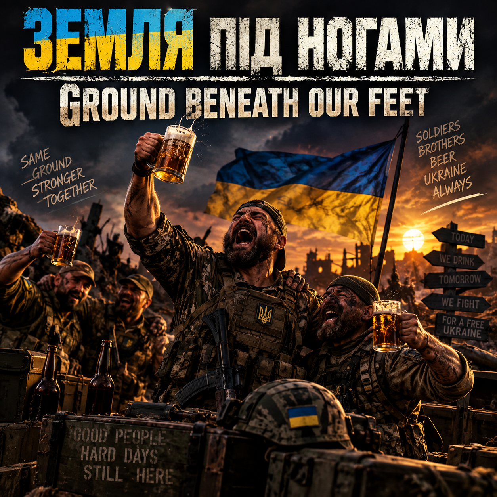
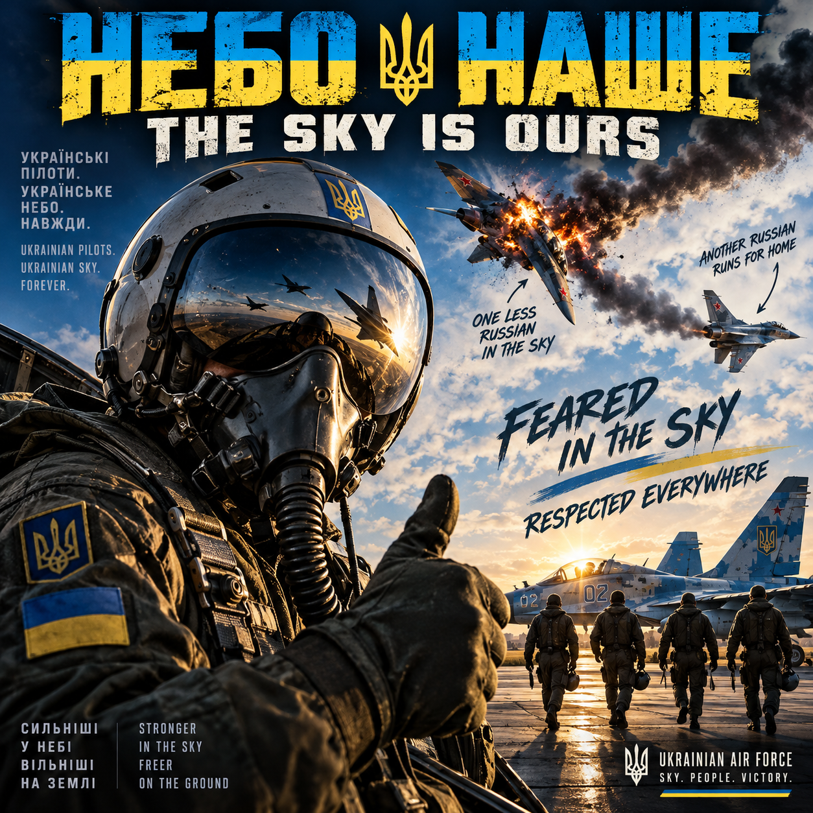

Сухопутні війська / Піхота
Ground Forces / Infantry
Земля Під Ногами — "Ground Beneath Our Feet"
Драйвовий гітарний рок · Driving guitar rock
Братерство, тримання лінії разом і полегшення, коли нарешті сходиш з неї. Пісня для дороги назад із передової, а не вперед до неї — та, яку вмикає підрозділ, коли всі ще живі.
Camaraderie, holding the line together, and the release of finally getting off it. Built for the walk back from the front, not the walk toward it — the kind of song a squad puts on when everyone's still standing.
Повітряні сили України — Пілоти та екіпажі
Ukrainian Air Force — Pilots & Aircrews
Небо Наше — "The Sky Is Ours"
Швидкий, високолітний рок із форсом · Fast, high-flying rock with swagger
Швидкість, висота і та особлива впевненість людей, які літають заради життя. Пісня для чергової кімнати та злітної смуги — братерство з відтінком показухи, бо пілоти це заслужили.
Speed, altitude, and the specific confidence of people who fly for a living. A song for the ready room and the runway — camaraderie with an edge of showing off, because pilots earn that.
Розрахунки протиповітряної оборони
Air-Defense Crews
Пильний, напружений рок із наростаючим приспівом · Steady, watchful rock with a rising chorusДля тих, хто стежить за небом над українськими містами, щоб іншим не довелося цього робити. Пильність, покладена на музику — напружена у куплетах, тріумфальна щоразу, коли щось не долітає.
For the people watching the sky over Ukrainian cities so everyone else doesn't have to. Vigilance set to music — tense in the verses, triumphant every time something doesn't get through.
Expected file: air-defense.mp3
Екіпажі дронів (БПЛА)
Drone / UAV Crews
Електро-рок / денс-рок на гітарах · Electronic-rock / dance-rock, guitar drivenСучасний відтінок для сучасної роботи — синтезаторний пульс під справжніми гітарами, для екіпажів, які ведуть зовсім іншу війну, ніж їхні діди.
A modern edge for a modern job — synth pulse layered under real guitars, built for the crews running a very different kind of war than the one their grandfathers fought.
Expected file: drone-crews.mp3
Бойові медики та медичні бригади
Combat Medics & Medical Brigades
Енергійний, міцний рок — не сумна пісня · Tough, energetic rock — not a sad songДля медиків, медсестер, лікарів і санітарних бригад. Свідомо не сумна пісня — це люди, які рухаються швидко і залишаються стійкими в найгірших умовах, і пісня рухається так само.
For medics, nurses, doctors, and casualty teams. Deliberately not a tearjerker — these are people who move fast and stay steady under the worst conditions imaginable, and the song moves like they do.
Expected file: combat-medics.mp3
Пожежники та рятувальні бригади
Firefighters & Emergency Rescue Crews
Терміновий, стрімкий рок · Urgent, propulsive rockДля тих, хто біжить до вогню, коли всі інші тікають від нього. Побудована на русі вперед — жодного вагання в аранжуванні, бо його немає й у самій роботі.
For the people who run toward the fire while everyone else is running the other way. Built around forward motion — no hesitation in the arrangement, because there's none in the job.
Expected file: firefighters.mp3
Танкові екіпажі
Armor / Tank Crews
Важкий, механічний рок із потужним гроувом · Heavy, mechanical-feeling rock, huge grooveРитмічна і важка, побудована на грува, що відчувається як рух гусениць. Ця пісня тримається низько і важко від початку до кінця — з реальною вагою.
Rhythmic and weighty, built around a groove that feels like tracks turning over. This one sits low and heavy the whole way through — a song with mass to it.
Expected file: armor-crews.mp3
Артилерійські розрахунки
Artillery Crews
Громовий бас і барабани — потужний рок, не метал · Thunderous drums and bass — powerful rock, not metalПобудована на низьких частотах та ударі, а не на спотворенні й швидкості — потужна, але без переходу в метал. Основну роботу тут виконують барабани, як і самі розрахунки.
Built on low end and impact rather than distortion and speed — powerful without tipping into metal. The drums do the heavy lifting here, the way the crews do.
Expected file: artillery.mp3
Бойові інженери та сапери
Combat Engineers & Demining Teams
Стійкий, цілеспрямований рок · Steady, purposeful rockДля тих, хто розчищає шлях, ремонтує зламане й будує те, що потрібно далі. Методична, а не панічна — терпіння, покладене на ритм, для роботи, де терпіння рятує життя.
For the people who clear the way, repair what's broken, and build what's needed next. Methodical rather than frantic — patience set to a beat, for a job where patience keeps people alive.
Expected file: combat-engineers.mp3
Розвідники
Reconnaissance / Scouts
Темніший, холодніший, швидший рок — енергія ночі · Darker, cooler, faster rock — nighttime energyМенше світла, вищий темп, трохи більше характеру. Ця пісня рухається так, ніби намагається залишитися непочутою — для тих, чия робота — бачити, залишаючись непоміченими.
Lower light, higher tempo, a little more attitude. This one moves like it's trying not to be heard — built for the people whose whole job is seeing without being seen.
Expected file: reconnaissance.mp3
Логістика та підрозділи забезпечення
Logistics & Support Crews
Дорожній, котячий рок · Rolling, road-worthy rockДля водіїв, механіків, постачальників і ремонтних бригад, які тримають рух усіх інших. Про цю групу пишуть замало пісень — ця прикриває їхню спину.
For the drivers, mechanics, supply personnel, and maintenance crews who keep everyone else moving. Nobody writes enough songs for this group — this one has their back.
Expected file: logistics-support.mp3
Поранені та ті, хто одужує
Wounded & Recovering Service Members
Рішучий, наростаючий рок — відновлення, не жалість · Determined, rising rock — recovery, not pityПісня «я все ще тут», а не пісня співчуття. Побудована на силі й повільній, впертій роботі повернення на ноги — заслужена енергія, а не награний сум.
An "I'm still here" song, not a sympathy song. Built around strength and the slow, stubborn work of getting back on your feet — earned energy, not manufactured sadness.
Expected file: wounded-recovering.mp3
Загиблі побратими та ті, хто береже їхню пам'ять
Fallen Comrades & Those Who Carry Their Memory
Повільно, свідомо — єдине місце, де список зупиняється · Slow, deliberate — the one place this list stops moving fastТут темп навмисно сповільнюється. Пісня для друга, який не повернувся, і для тих, хто несе цю пам'ять далі — тиха, чесна, з простором, якого решта списку собі не дозволяє.
This is where the tempo drops on purpose. A song for the friend who didn't come back, and for the people who carry that memory forward — quiet, honest, and given the space the rest of this list doesn't take.
Expected file: fallen-comrades.mp3
Усі разом
Everybody Together
Великий спільний спів — дружба, виживання, повернення додому · The big singalong — friendship, survival, getting homeСолдати, пілоти, медики, пожежники, рятувальники й усі, хто в забезпеченні, — в одній кімнаті. Це завершальний гімн — підняти келих, пережити ще один день і одного разу повернутися додому. Створена, щоб її співали, а не просто слухали.
Soldiers, pilots, medics, firefighters, rescuers, and everyone in support, all in the same room. This is the closing anthem — raise a glass, survive another day, and one day, get home. Built to be sung, not just heard.
Expected file: everybody-together.mp3